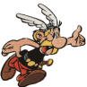

Astérix est un brave guerrier gaulois qui vit paisiblement dans son petit village. Astérix est astucieux, et c'est pourquoi son chef Abraracourcix fait souvent appel à lui pour régler certains problèmes, particulièrement ceux avec leurs voisins, les Romains.
Au village vit un druide, Panoramix, qui détient la recette secrète d'une potion donnant une force surhumaine. Lorsque Panoramix administre la potion magique à Astérix alors cette force jumelée à sa bravoure font de lui un redoutable adversaire pour quiconque ose mettre le village en danger.
Astérix aime bien la chasse. Les sangliers doivent donc se tenir loin car ils constituent le principal met de ce valorieux guerrier.
Comme déjà mentionné, il aime aussi défendre le village contre toute attaque extérieure ainsi que contre les complots des Romains.
Comme tout bon Gaulois, Astérix n'a peur que d'une seule chose
C'est que le ciel lui tombe sur la tête!!
Suivez ses aventures à travers ses livres
Les principaux ennemis d'Astérix et Obélix sont les romains et les pirates.
Dans le cadre du cours Développement Web I